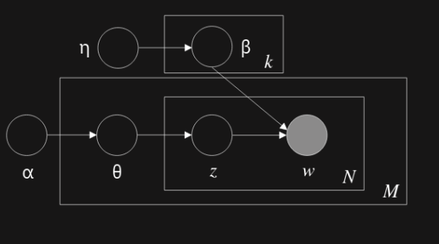
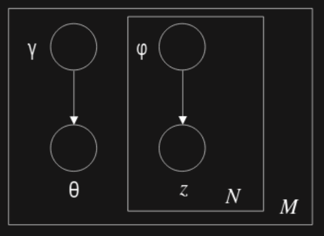
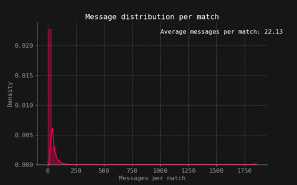
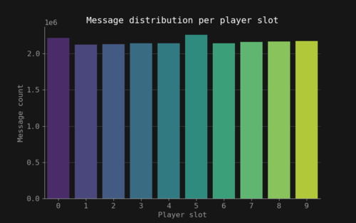
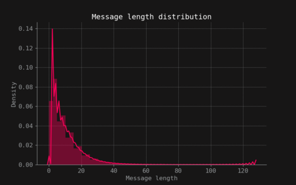
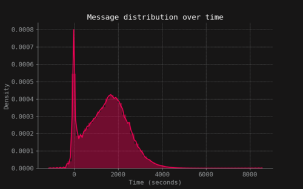
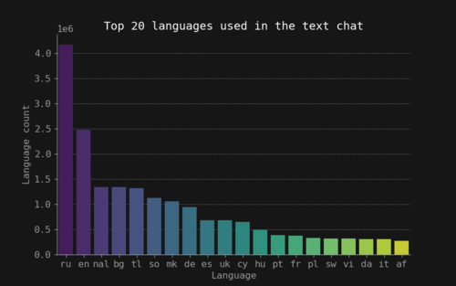

Dota 2 Toxicity
Introduction
Dota 2 is a multiplayer online battle arena (MOBA) game. It’s one of the most popular competitive games in the market and has the biggest prize pool in a single event of all e-sports [13]. Due to its high popularity and e-sport scene [2], Dota 2 is regarded as a highly competitive game. As a Dota 2 player myself, I’ve experienced harassment and toxic behaviour in-game. This is not however, an isolated experience. In fact, Dota 2 is regarded as the most toxic online competitive game [2]. Harassment and toxicity can be generated by three means. The first one is through griefing, which involves using in-game mechanics in order to downgrade the playing experience of other players. The second channel where it can happen is in the in-game voice chat. Finally, the last channel where it happens is the in-game text channel, where players can freely communicate with their teammates or enemies.
The game is based around two factions, the Radiant and the Dire. Both factions are placed in a square map where each faction has its own base and buildings placed in an almost symmetrical way around the map. The game starts with 10 players which are paired into teams of 5 and each team belongs to one faction. Each player has to choose a character called hero which has unique special abilities and it’s going to be the main point of contact of the player with the environment. The end goal of the game is for each team to destroy the opponents faction base. The game is empirically divided into three stages. The first stage is known as early game where the objective is to earn gold and make each hero stronger. The second stage is called mid game and its objective is to start destroying the enemy buildings and it’s the phase where skirmishes between teams start to happen. The final stage is called late game and it is characterized by the fact that some heroes have capped their strength potential or are close to it and minimal mistakes will most probably cost the game for a faction. It is worth noting that this division is not an in-game mechanic perse but rather a way in which the community describes the behavioural patterns that are common as the game progresses over time. The goal of this project is to measure toxicity in the in-game Dota 2 chat. More specifically, I want to test my hypothesis that in the early and late game stages there is a higher degree of toxicity in the in-game chat compared to the mid game.
Related work
To the best of my knowledge there is no work that applies topic modeling or text mining to determine the distribution of toxic behaviour over time of online games like Dota 2. There are however, studies related to explaining such toxic behaviours [8], how to deal and minimize toxic behaviour and harassment[1] and surveys that study the frequencies of toxic behaviour, the seriousness of these behaviours, and how the toxic behaviour affects the gameplay experience of Dota 2 [9].
Theory
In this section the two methods used to developed this project are going to be briefly described.
Naive bayes classifier
The Naive Bayes Classifier is a machine learning model that uses the Bayes Rule to classify observations. The setting of the classifier is as follows: $C$ is a set of possible classes, $V$ is a set of possible words, $P(c)$ is the probabilities that specify how likely it is for a document to belong to class $c$ and $p(w|c)$ contains the probabilities that specify how likely it is for a document to contain the word $w$, given that the document belongs to class $c$ (one probability for each class-word pair). The classifier assigns a class $c$ to the word $w$ following this rule:
$$\hat{C} = argmax_{c \in C} P(c) \prod_{w\in V} P(w|c)^{(w)}$$
latent dirichlet allocation
Latent Dirichlet Allocatoin (LDA) [3] is a generative statistical model for collections of discrete data such as text corpora. The generative process of LDA is as follows:
- Choose $N \sim Poisson(\eta)$
- Choose $\theta \sim Dir(\alpha)$
- For each of the $N$ words $w_n$
- Choose a topic $z_n \sim Multinomial(\theta)$
- Choose a word $w_n$ from $p(w_n | z_n, \beta)$, a multinomial probability conditined on the topic $z_n$
The graphical model representation of LDA can be seen in Figure 1. In this setting, $M$ represents the number of documents in a corpus $D$ and $N$ represents the number of words in a document. The main inferential problem that needs to be solved by LDA is computing the posterior distribution of the hidden variables given a document:
$$p(\theta, \mathbf{z} | \mathbf{w}, \alpha, \beta)=\frac{p(\theta, \mathbf{z}, \mathbf{w} | \alpha, \beta)}{p(\mathbf{w} | \alpha, \beta)}$$
Unfortunately this distribution is intractable. So a variational Bayesian method is used. This takes a simpler distribution to approximate it. The graphical representation of the variational distribution can bee seen in Figure 2.
$$q(\theta, \mathbf{z} | \gamma, \varphi)=q(\theta | \gamma) \prod_{n=1}^{N} q\left(z_{n} | \varphi_{n}\right)$$ 
Figure 1: Graphical model representation of the LDA model

Figure 2: Graphical model representation of the variational distribution used toapproximate the posterior in LDA
Data
The data used in this project comes from a kaggle dataset [6] which was collected and uploaded by GOSU.AI, a company that works on developing AI assistants for online competitive games. The dataset consists of four entries: a game match index, the in-game time stamp, the player slot (0-9) and the text message sent by that player. The dataset contains 21.659.448 unique text chats. The amount of messages per match is mostly concentrated under the 250 unique chat messages as shown in Figure 3. The messages are uniformly distributed over the 10 players of each game as seen in Figure 4. Also messages are usually around 20 characters or less as seen in Figure 5. The messages over time have a unique behaviour, there is a spike of activity in the early game when the game is starting and the players are choosing their heroes. After that, a rapid fall of the number of messages its seen and then it increases again as the game progresses and decreases rapidly to zero as seen in Figure 6.
Preprocessing
As Dota 2 is an online multiplayer game, any player from around the world can take part of the experience. Thus, Dota 2 text messages can come from any language or even a mixture of them. For example, combinations of Spanish and English are not uncommon in the Americas region (from personal experience). This is important because the model used to measure toxicity in this work supports mostly English as the default language. So, as part of the preprocessing the language for each text message was inferred and tagged as a new feature in the dataset. The distribution of the top 20 languages can be seen in Figure 7. The most used languages in the game are English and Russian. So the first preprocessing step was to remove all the languages that weren’t tagged as English. The second step on the preprocessing step consisted of removing stop words, non alpha-numerical words and words that were shorter than 3 letters.
 Figure 3: Message distribution per match
 Figure 4: Message distribution per player slot
 Figure 5: Message length distribution
 Figure 6: Message distribution over match length
 Figure 7: Language distribution of messages
Method
Preprocessing
In the preprocessing pipeline a Naive Bayes filter [12] was used to tag each document of the corpus with its corresponding language, more specifically, the library langdetect was used to do such tagging 6. Due to the sheer amount of documents, this task was distributed on all cores of a i7 - 7700K using dask [11], this preprocessing took around 12 hours. If the model wasn’t able to detect the language, the document was tagged with nal which stands for Not a Language. After tagging each document with its language and removing those that were not English, stop words were removed along with non alpha-numeric text and words with a length lower than 3 characters, this was done using the spacy [7] English language model, this process took around 2 hours and 44 minutes withthe same hardware.
Data split
The hypothesis to test is if early and late game are more toxic than mid game. Given this, the dataset is divided in 3 splits, each one corresponding to each stage of the game. Since the game stages aren’t clearly defined by any in-game mechanic but rather are stages were certain player behaviour is present, the strategy for splitting the documents was to evenly split the data across the time dimension. This means that the documents were divided using the tertiles of the time distribution.
Training
For each of the stages datasets (early, mid, late) a LDA model was trained using scikit-learn[10] with default parameters except that the maximum number of iterations was set to 15. More specifically, a pipeline where the data was transformed with the CountVectorizer and then fed to the LDA model was created and a grid-search was used on a grid of hyperparameters to select the best model for each stage. The hyperparameter space was conformed of 1,2,3n-grams for the CountVectorizer and 3,6,9 topics for the LDA model. After the best hyperparameters were selected for each stage, a new vectorizer and LDA model was trained using the entire stage dataset. This process took around 9 hours.
Toxicity Stage Score
Once each model is trained, a toxicity score is given to each one of the stages. The score is calculated the following way. First, each model has a set of $K$ topics (notice that each model might have a different number of topics selected by the grid-search procedure), and the topics are related with all the words in the vocabulary in the LDA model through the variational parameter $\varphi$. This variational parameter is saved under the components_ attribute of the scikit-learn model and is a $K \times N$ matrix. Each word is assigned a toxic value $t(w)=P(toxic | w)$ which is the probability of a word being toxic. This toxic value is obtained using the PerspectiveAPI 6 which is an application built by Jigsaw and Google that can assign the probability of a piece of text being toxic. Since each word has a different distribution depending on the topic, the variational parameter $\varphi$ is normalized as suggested in the scikit-learn documentation and used as a distribution over the words for each topic. This normalized parameter ${\bar{\varphi}}_{ij}$ is the probability of the word $i$ appearing in the topic $j$. Thus, a topic toxic score is defined as:
$$\text{Topic Toxic Score}j = \sum_n^N t(w^n) {\bar{\varphi}}{nj}$$
Due to the sheer amount of words that each corpus for each stage can have (above 77.000 words) and the limitations that the PerspectiveAPI has in place for its API calls, only the top 10 words $\mathcal{W}$ are taken into account in the calculation of the topic toxic score. The ranking of the words is done with respect to ${\bar{\varphi}}_{ij}$, so the higher the value the higher ranking it will have. Thus, the actual formula used in the calculations is:
$$\text{Topic Toxic Score}j = \sum_n \frac{t(w^n) {\bar{\varphi}}{nj}}{\sum_n{\bar{\varphi}}_{nj}}, {n \in \mathcal{W}}$$
The final toxicity stage score is calculated using the variational document topic distribution $q(\theta | \gamma (\mathbf{w}))$ obtained from the optimization results of LDA. This distribution can be calculated using the method transform from the LDA class model in scikit-learn for a particular corpus $D$ (early, mid, late game). The resulting distribution is a $M \times K$ matrix where each row represents the probability of each topic in the given document $d$. The estimator $\hat{\theta}_{*j}$ is proposed as the average representation of the topic $j$ across a corpus.
$$\hat{\theta}{*j} = \frac{1}{M} \sum_d^M q(\theta{dj} | \gamma (\mathbf{w}_d))$$
With this, the toxicity stage score is defined as:
$$\text{ToxicityStageScore} = \sum_j^K \frac{\hat{\theta}{*j} \times Topic Toxic Score_j}{\sum_j^K \hat{\theta}{*j}}$$
The above estimator for the toxicity of the stages of Dota 2 will be used as a measure to test the hypothesis in the introduction section.
Results
The grid-search results where that all CountVectorizer should use a 1-gram representation of words and that all LDA models should have 3 topics. The topics and the top 10 words of each topic and each stage are presented below.
Stage: Early Game
Topic 1: game, team, play, pudge, win, come, nice, carry, coming, thanks
Topic 2: time, know, rofl, guys, want, think, got, wtf, man, stop
Topic 3: report, fuck, fucking, mid, shit, pls, wait, feed, new, need
Stage: Mid Game
Topic 1: game, fuck, win, carry, pudge, nice, lol, got, worth, trash
Topic 2: report, team, shit, pls, rofl, play, know, pick, come, thanks
Topic 3: ucking, end, mid, good, commend, want, easy, hero, noob, man
Stage: Late Game
Topic 1: win, carry, play, time, like, got, want, think, lose, kil
Topic 2: report, game, team, fucking, fuck, pls, pudge, easy, lol, rofl
Topic 3: commend, shit, good, end, guys, trash, come, thanks, noob, pick
Using these words, the toxicity stage score was calculated for each stage. The early game got a toxicity stage score of 0.1690, the mid game got a scoreof 0.1931 and the late game got a score of 0.1789.
Discussion
Stages topics
The first topic of the early game seems to be talking about strategy since words like game, team, play and win are the most important. The second topic of the early game seems to be related to a reaction, by this, it seems that is composed of words usually used when something bad happens and one player tries to demonstrate being in shock due to a bad behaviour done by others. The last topic of the early game seems to be related with blame, since words like “report, fuck, fucking and shit” are used. The mid game seems to be consisting of blame topics, there is no clear distinction between them. The topics for the late game seems like a mixture between blame and rating. The blame topic appears as stated above because there are several negative words that are used against other players like “report, fucking, fuck and easy” (used usually as a way of expressing how easy was to win a game against an opponent). The rating topic involves positive words like commend, good and thanks that are usually used in the context of congratulating other players for their performance during the match.
Toxicity Stage Scores
The toxicity stage scores presented in the results section contradicts the hypothesis that the early and late game are more toxic than the mid game. In fact, the mid game seems to be the most toxic, followed by the end game and then the early game.
Limitations
The results presented above should be taken with care since the methodology introduced several assumptions that might influence the representation of toxicity in the stages of the game. The first problem with the approach is the usage of the Naive Bayes filter to detect the language of the documents. This is because some texts might be a mixture of languages and only one of those were selected by the application. This will introduce noise into the dataset. The second limitation of the methodology was the data split used to select the data for the early, mid and late game. Dividing the stages of the game into the bins created by the tertiles is a practical approach but that might not necessarily represent the actual stages. Some documents from one stage might leak to another stage and viceversa, the behaviour of this will depend on the actual distribution of the stages which is unknown. Another limitation of the methodology is the limited hyperparameter space of the grid-search. The repercussions of this can be easily seen in the topics of the mid game, where all of them seem to be the same. So, a bigger hyperparameter space that contained more alternatives for the number of topics and n-grams could potentially have generated better topics. However, there is a time and hardware constraints that limits the hyperparameter spaces that can be explored. The next assumption that might bias the results is assuming that the top 10 words are a good representation of each topic. This might not be the case and it all depends on the actual distribution of the words over the topics. Finally, at the core of the toxicity score, lives the usage of the PerspectiveAPI, which is assumed to be able to determine the actual toxicity of the words in a Dota 2 context. This is a hard assumption to make, but it guarantees that the toxicity measure for the words is as impartial as possible.
Conclusion
From the results of this project, it can be concluded that my prior hypothes that the early and late game are more toxic than the mid game is potentially false. In fact, the mid game seems to be more toxic than the other two stages. Given the results, the mid game is the most toxic stage, followed by the late game and finally by the early game. These results must be taken with care and should be used as a first approximation or exploratory analysis of the text chat toxicity distribution over time of Dota 2 games.
References
[ 1 ] Sonam Adinolf and Selen Turkay. Toxic behaviors in esports games: Player perceptions and coping strategies. In Proceedings of the 2018 Annual Symposium on Computer-Human Interaction in Play Companion Extended Abstracts, CHI PLAY ’18 Extended Abstracts, page 365–372, New York, NY,USA, 2018. Association for Computing Machinery.
[ 2 ] Anti-Defamation League ADL.Free to Play Hate, Harassment and Positive Social Experiences in Online Games, 2019.https://www.adl.org/media/13139/download.
[ 3 ] David M. Blei, Andrew Y. Ng, and Michael I. Jordan. Latent dirichlet allocation. J. Mach. Learn. Res., 3(null):993–1022, March 2003.
[ 4 ] Michal Danilk. Langdetect. https://pypi.org/project/langdetect/.
[ 5 ] Jigsaw Google. Perspective api, 2020. https://www.perspectiveapi.com.
[ 6 ] GOSU.AI.GOSU.AI Dota 2 Game Chats, 2019.https://www.kaggle.com/romovpa/gosuai-dota-2-game-chats.
[ 7 ] Matthew Honnibal and Ines Montani. spaCy 2: Natural language understanding with Bloom embeddings, convolutional neural networks and incremental parsing. To appear, 2017.
[ 8 ] Haewoon Kwak, Jeremy Blackburn, and Seungyeop Han. Exploring cyberbullying and other toxic behavior in team competition online games. In Proceedings of the 33rd Annual ACM Conference on Human Factors inComputing Systems, CHI ’15, page 3739–3748, New York, NY, USA, 2015.Association for Computing Machinery.
[ 9 ] Topias Mattinen.Toxic Behavior in Dota 2 - a Survey Study. PhD thesis, University of Tampere, 06 2018.
[ 10 ] F. Pedregosa, G. Varoquaux, A. Gramfort, V. Michel, B. Thirion, O. Grisel,M. Blondel, P. Prettenhofer, R. Weiss, V. Dubourg, J. Vanderplas, A. Pas-sos, D. Cournapeau, M. Brucher, M. Perrot, and E. Duchesnay. Scikit-learn: Machine learning in Python.Journal of Machine Learning Research,12:2825–2830, 2011.
[ 11 ] Matthew Rocklin. Dask: Parallel computation with blocked algorithms andtask scheduling. In Kathryn Huff and James Bergstra, editors,Proceedingsof the 14th Python in Science Conference, pages 130 – 136, 2015.
[ 12 ] Nakatani Shuyo.Language detection library for java,2010.http://code.google.com/p/language-detection/.
[ 13 ] Mike Stubbs.The International 9 Dota 2 Tournament Prize Pool Breaks 30Million, 2019. https://www.forbes.com/sites/mikestubbs/2019/07/27/the-international-9-dota-2-tournament-prize-pool-breaks-30-million/. Code